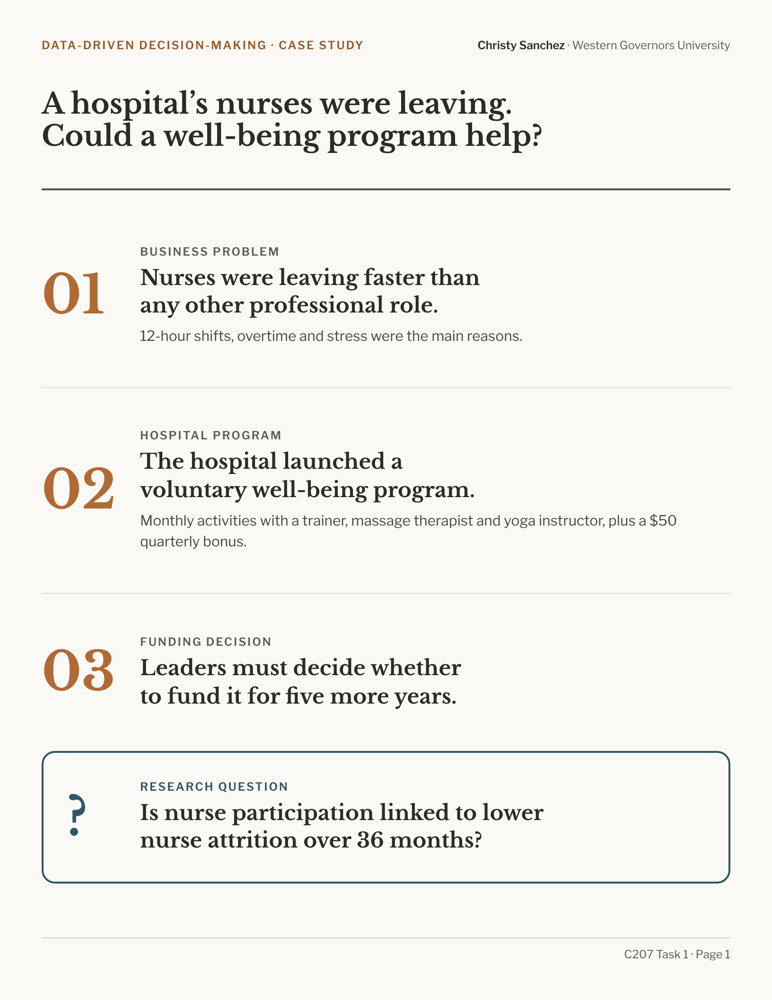
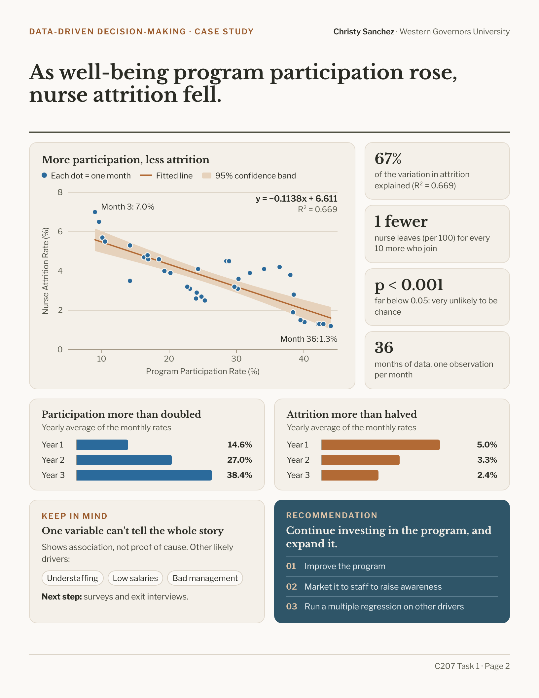

Case study · Data-Driven Decision-Making
Does a well-being program keep nurses from leaving?
A hospital had to decide whether to keep funding its employee well-being program. I used a simple linear regression on 36 months of data to test whether nurse participation is linked to nurse attrition, then turned the results into a recommendation for leadership.
The situation
Nurses were leaving. Could a well-being program help?
Business problem
Nurse turnover was higher than for any other professional role at the hospital. Nurses who left cited 12-hour shifts, overtime and stress.
Hospital program
For three years, a voluntary well-being program offered monthly activities with a trainer, a massage therapist and a yoga instructor, plus a $50 quarterly bonus for consistent participation.
Funding decision
Leadership was reviewing the program’s five-year funding and needed to know whether it was working.
The question & approach
Is nurse participation linked to lower nurse attrition?
Data
36 monthly observations of two variables: the nurse participation rate in the program (X) and the nurse attrition rate (Y).
Method
Simple linear regression, testing the null hypothesis of no relationship at the standard 0.05 significance level.
Scope
The analysis shows whether the two move together. It doesn’t claim the program causes the change.
What I found
As participation rose, attrition fell.
67%
of the month-to-month variation in nurse attrition is explained by program participation (R² = 0.669).
1 fewer
nurse leaves, out of every 100, for each 10 more who join the program (slope = −0.1138).
p < 0.001
The relationship is statistically significant, so I rejected the null hypothesis.




Recommendation & limitations
Keep investing, and look deeper.
Recommendation
Continue investing in the well-being program, and expand it.
- Improve the program, building on its results.
- Market it to staff to raise awareness.
- Run a multiple regression to find other drivers of attrition.
Limitations
One variable can’t tell the whole story.
Attrition likely has other drivers, such as understaffing, pay and management. Surveys and exit interviews would help identify them.
Skills shown
What this project demonstrates
Statistical analysis
Regression, goodness of fit, significance testing and interpreting coefficients.
Plain-language insight
Translating statistics into findings non-technical decision-makers can use.
Data storytelling
A slide deck and a two-page infographic built around one clear message.
The same approach applies to marketing questions, such as whether campaign engagement predicts customer retention.
Downloads